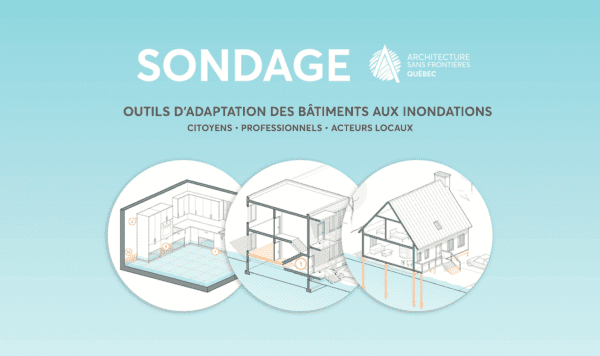

Nos nouvelles

PARTICIPEZ : Sondage pour améliorer l’adaptation des bâtiments aux inondations
Vous êtes concerné.e.s ou préoccupé.e.s par l’adaptation des bâtiments aux inondations ? Vous avez un point de vue à partager à titre de citoyen, de professionnel ou de représentant d’une instance aux prises avec cette problématique? ASFQ et ses collaborateurs du Ministère de l’environnement et de l’INRS vous invitent à remplir ce court sondage qui nous permettra d’améliorer les outils et les référentiels d’adaptation existants. À partager sans retenue dans vos réseaux! Cette enquête menée par ASFQ s’inscrit dans le cadre d’une réflexion [...]

École en Tanzanie : le chantier se prépare !
La conception de l’école primaire pour la communauté massaï d’Enguserosambu est terminée et sa construction s’apprête à commencer. L’équipe de volontaires du Programme du regroupement étudiants pour la coopération internationale de l’ÉTS (PRÉCI) prend désormais le relais en Tanzanie pour participer au chantier. Notre architecte coopérant, Étienne Bernier d’Agence Spatiale, et notre architecte coordonnatrice de projets, Maude Ledoux, sont fiers du travail accompli durant l’été pour terminer la conception de l’école. Soutenu par l’équipe de l’Agence Spatiale, le travail a été réalisé en étroite collaboration avec le PRÉCI et [...]

Itinérance et résilience aux inondations : la SCHL appuie 2 projets d’ASFQ
La Société canadienne d’hypothèques et de logement (SCHL) a récemment dévoilé les dix lauréats de son Fonds de recherche et de planification pour l’année 2023, ainsi que les vingt-six projets présélectionnés pour le quatrième cycle du Défi d’offre de logement – Bâtir pour l’avenir. ASFQ est fier de faire partie des deux listes, avec un programme de recherche sur l’itinérance et un projet en adaptation des bâtiments aux inondations ! Le financement obtenu grâce à un Fonds de recherche et de planification (250 000$) est offert dans le cadre de la Stratégie nationale sur le logement. Il permet de mettre en œuvre, pour une durée de deux ans, un programme de recherche intitulé Pratiques d’aménagement [...]

ANNONCE : le centre de matériaux récupérés Éco-Réno déménage dans un espace de 10 000 pi2 à Montréal !
Pour souligner les 20 ans d’impact de son entreprise Éco-Réno, Architecture Sans Frontières Québec (ASFQ) déménage ce fleuron de l’économie circulaire des matériaux dans un grand entrepôt situé au 9399 Saint-Laurent. En 2020, ASFQ reprenait les rênes d’Éco-Réno le seul commerce spécialisé dans le réemploi des matériaux de la construction à Montréal. [...]

ASFQ en visite à la Biennale de Venise !
Notre collègue Olivia Daigneault Deschênes, architecte et chargée de projet en solidarité urbaine chez ASFQ, était de passage à la Biennale d’architecture de Venise le 15 juin dernier, pour une rencontre mémorable avec l’équipe du pavillon du Canada : le collectif Architects Against Housing Alienation. C’est dans le cadre d’une résidence de recherche-création à la British school at Rome, en collaboration avec le Conseil des arts du Québec , qu’Olivia a rendu visite à l’équipe du pavillon du Canada de la Biennale, transformé par le collectif [...]

Conception d’une école en Tanzanie : l’étape d’esquisse est complétée !
Depuis leur mission réalisée en Tanzanie en avril dernier, notre coopérant volontaire Étienne Bernier, architecte associé à l’Agence Spatiale, ainsi que notre architecte coordonnatrice de projets, Maude Ledoux, collaborent à la conception des plans d’une école primaire pour la communauté massaï d’Enguserosambo. La conception va bon train ! La phase d’esquisse a été partagée aux partenaires du projet et la coordination des plans préliminaires est en cours. La proposition se détaille en 2 bâtiments qui regroupent 3 salles de classes, 1 bureau et 1 chambre pour les enseignants, une cuisine avec salle à manger et plusieurs espaces extérieurs couverts [...]
Lancement de WEB-RECYC et de la campagne « Une brique, un geste, un impact ! »
Afin de permettre aux Montréalais et Montréalaises de participer simplement et économiquement aux efforts de décarbonation des bâtiments, Architecture Sans Frontières Québec (ASFQ) et BRIQUE RECYC lancent aujourd’hui la campagne Une brique, un geste, un impact !, ainsi que la plateforme WEB-RECYC permettant la récupération et le réemploi de la brique dans les multiples chantiers [...]
Missions d’affaires pour documenter les bonnes pratiques d’économie circulaire!
Durant le mois d’avril, ASFQ a réalisé deux missions d’affaires, en Europe et sur la côte ouest américaine, pour documenter les meilleures pratiques dans le domaine de la récupération et de la réutilisation des matériaux de construction. Un double séjour on ne peut plus pertinent alors qu’ASFQ s’apprête cette année à ouvrir un centre de réemploi matériaux et des services connexes capables d’accélérer la pratique de l’architecture circulaire. [...]

ASFQ remet le prix Engagement social 2023 de l’OAQ à Lafond Côté Architectes
Lors du Gala de l’OAQ 2023, le 21 avril dernier, Christian Samman, président d’ASFQ, a remis avec fierté le Prix Engagement social 2023 à la firme Lafond Côté. Comme M Samman a tenu à le préciser, « ce prix récompense un groupe dont la pratique architecturale est axée sur l’équité sociale et l’équilibre environnemental », ce qui ne pourrait mieux correspondre au travail de la firme Lafond Côté Architectes. Basée à Québec et dirigée depuis 1993 par les associés Anne Côté et Mario Lafond, elle se démarque à travers sa contribution, depuis 30 ans, à plus de 3000 habitations collectives destinées à [...]

Les architectes Étienne Bernier et Maude Ledoux de retour de Tanzanie
Après deux semaines en Tanzanie, l’équipe d’architectes Étienne Bernier, coopérant volontaire, et Maude Ledoux, coordonnatrice de projets chez ASFQ, sont de retour de mission avec des informations précieuses pour la conception de l’école primaire des enfants de la communauté massaï d’Enguserosambu. Lors de cette mission, destinée à réaliser les études préconceptuelles du projet, l’équipe a pu rencontrer cette communauté emblématique de l’est africain et mieux comprendre sa culture, ses besoins et les défis liés à l’emplacement du futur projet, en territoire massaï. L’équipe a effectué plusieurs déplacements, notamment entre les villes [...]
« Habitations + Inondations » : nouvel outil incontournable pour l’adaptation résidentielle
ASFQ annonce la publication du recueil de fiches pratiques Habitations + Inondations : mesures d’adaptation résidentielle, destinées à guider les propriétaires et les autres acteurs de l’industrie afin d’accroître la résilience des bâtiments. Inédit au Québec comme au Canada, ce nouvel outil a été dévoilé le 29 mars dernier lors d’une conférence organisée à [...]
Appel de candidatures – Quatre postes sont ouverts sur le CA d’Architecture sans frontières Québec
ASFQ lance un appel de candidatures pour des postes de son conseil d’administration. L’organisme cherche en particulier des profils professionnels distincts pour compléter le CA actuel : 1) Architecture et gestion de projets ; 2) Philanthropie et financement ; 3) Coopération internationale ; 4) Habitat autochtone. Les candidatures issues de la jeunesse et de la diversité sont les bienvenues! Parlez-en dans vos réseaux. Architecture sans frontières Québec (ASFQ) est un organisme qui vient en aide aux populations victimes de crises, de catastrophes naturelles ou d’inégalités sociales. Il œuvre avec les communautés pour renforcer leurs capacités grâce à [...]
Revoyez le colloque Architecture + Itinérance 2022 en libre rediffusion !
En 2022, ASFQ organisait la première édition du colloque Architecture + itinérance, une rencontre interdisciplinaire inédite où près de 200 personnes ont pu réfléchir à la contribution positive que le design peut apporter dans la conception d’une ville davantage solidaire et inclusive. Le colloque a également été l’occasion de dévoiler un tout nouveau catalogue de pratiques novatrices locales et internationales en matière sur la question. Pour celles et ceux qui n’ont pas pu y assister, l’événement est désormais disponible ici